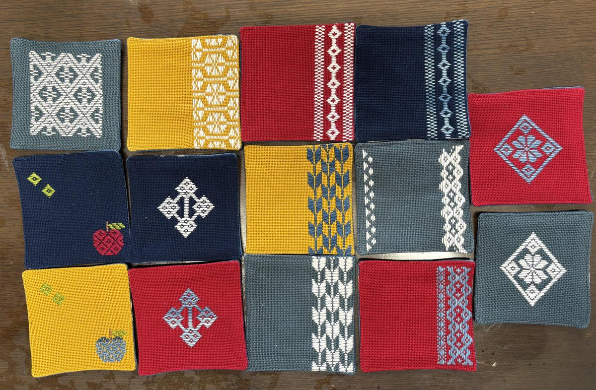
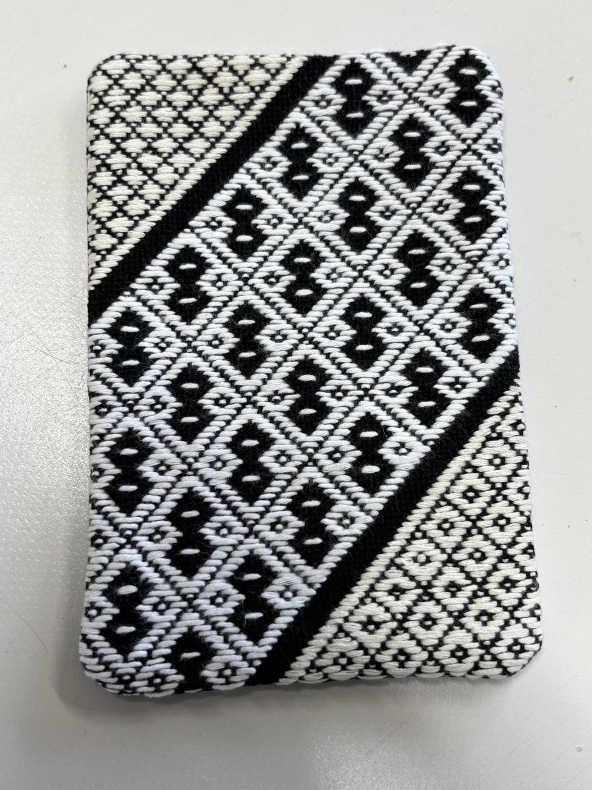

商品紹介
津軽の伝統的な刺し子技法「こぎん刺し」を、日々使える形にしています。幾何学模様は一つひとつ手刺しのため、同じ柄でも表情が異なります。※写真はイメージです。



お守り
真言宗阿闍梨でもある理事長が、一体ずつ魂入れ（しんいれ）をしています。糸を選び、形を整え、一つずつ手で仕上げた一点ものです。
価格：600〜700円
コースター
こぎん刺しの幾何学模様を、毎日の食卓に。手刺しのため一枚ごとに表情が異なります。
価格：600〜700円
ポーチ・トートバッグ・名刺入れ
手刺しのこぎん模様をあしらった、普段使いの小物です。仕様によって価格が変わります。
価格：ご相談
オーダーメイド
名前や好きなモチーフ、記念日のデザインなどを、こぎん刺しや生地に落とし込んだ、世界に一つだけの御守りや小物を作れます。図案から新しく起こす場合は+2,000円。本体価格・数量・納期はご相談のうえで決めます。
価格・ご購入方法・お取り扱い店舗など、商品の詳しいご案内は商品カタログでご覧いただけます。
商品カタログを見る